<!doctype html><html lang="pt-BR"><head><meta charset="utf-8"><title>Luquinhas Boost</title>
<style>
:root{--bg:#07060b;--card:rgba(255,255,255,.035);--line:rgba(255,255,255,.075);--tx:#f3eefc;--mu:#8f86a8;--ac:#a855f7;--ac2:#7c3aed;--ok:#34d399}
*{box-sizing:border-box}
body{margin:0;height:100vh;display:flex;background:var(--bg);color:var(--tx);font:14px 'Segoe UI Variable','Segoe UI',sans-serif;overflow:hidden}
.bg{position:fixed;inset:0;pointer-events:none;background:radial-gradient(650px 420px at 88% -8%,rgba(124,58,237,.25),transparent),radial-gradient(520px 420px at -5% 105%,rgba(168,85,247,.12),transparent)}
aside{width:224px;padding:22px 14px;border-right:1px solid var(--line);position:relative;display:flex;flex-direction:column;gap:4px;flex:none}
.logo{display:flex;margin:0 0 24px -2px;font-family:Bahnschrift,'Segoe UI Semibold',sans-serif;font-variation-settings:'wdth' 88}
.logo img{width:196px;height:auto;filter:drop-shadow(0 0 12px rgba(168,85,247,.45))}
.logo b{display:block;font-size:17px;letter-spacing:3px;line-height:1}
.logo small{display:block;font-size:10px;letter-spacing:9px;color:var(--ac);margin-top:5px;font-weight:700}
.nv{display:flex;align-items:center;gap:12px;padding:11px 12px;border:0;border-radius:10px;background:none;color:var(--mu);font:inherit;cursor:pointer;position:relative;text-align:left;transition:.2s}
.nv svg{width:19px;height:19px}.nv:hover{color:var(--tx);background:rgba(255,255,255,.04)}
.nv.on{color:var(--tx);background:rgba(168,85,247,.14)}
.nv::before{content:'';position:absolute;left:-14px;top:25%;height:50%;width:3px;border-radius:3px;background:var(--ac);transform:scaleY(0);transition:.25s}
.nv.on::before{transform:scaleY(1)}
.ver{margin-top:auto;color:var(--mu);font-size:12px;padding:0 8px}
main{flex:1;padding:28px 32px;overflow:auto;position:relative}
main::-webkit-scrollbar{width:8px}main::-webkit-scrollbar-thumb{background:#2a2142;border-radius:8px}
h1{margin:0;font:700 26px Bahnschrift,'Segoe UI';letter-spacing:.5px}h3{margin:0 0 14px;font-size:15px}
.mu{color:var(--mu);margin:4px 0 18px}.gr{background:linear-gradient(90deg,#e9d5ff,var(--ac));-webkit-background-clip:text;color:transparent}
.st{animation:up .45s cubic-bezier(.2,.7,.2,1) both;animation-delay:calc(var(--i,0)*45ms)}
@keyframes up{from{opacity:0;transform:translateY(12px)}to{opacity:1;transform:none}}
.card{background:var(--card);border:1px solid var(--line);border-radius:14px;padding:18px;transition:.25s}
.card:hover{border-color:rgba(168,85,247,.4);transform:translateY(-2px);box-shadow:0 10px 30px -12px rgba(124,58,237,.45)}
.hero{display:flex;align-items:center;gap:16px;padding:20px 22px;border-radius:14px;margin-bottom:14px;border:1px solid rgba(168,85,247,.3);background:linear-gradient(110deg,rgba(124,58,237,.28),rgba(168,85,247,.05))}
.hero div:nth-child(2){flex:1}.hero b{display:block;font-size:16px}.hero span{color:var(--mu);font-size:13px}
.hi{width:46px;height:46px;border-radius:12px;background:rgba(168,85,247,.2);display:grid;place-items:center;color:#e9d5ff;animation:pulse 2.6s ease-in-out infinite}
.hi svg{width:24px}@keyframes pulse{50%{box-shadow:0 0 0 8px rgba(168,85,247,.0),0 0 22px rgba(168,85,247,.5)}}
.stats{display:grid;grid-template-columns:repeat(4,1fr);gap:12px;margin-bottom:14px}
.stat{position:relative}.stat small{color:var(--mu);display:block;margin-top:22px}.stat b{display:block;margin-top:3px;font-size:14px;line-height:1.3}
.tag{font-size:11px;padding:3px 8px;border-radius:6px;background:rgba(168,85,247,.16);color:#d8b4fe;white-space:nowrap}
.stat .tag{position:absolute;right:14px;top:14px}
.two{display:grid;grid-template-columns:1fr 1fr;gap:12px}
.rw{display:flex;justify-content:space-between;padding:11px 0;border-top:1px solid var(--line);color:var(--mu)}.rw b{color:var(--tx);font-weight:600;text-align:right}
.rg{display:flex;align-items:center;gap:22px}.rg svg{width:110px;height:110px;flex:none;transform:rotate(-90deg)}
.rg circle{fill:none;stroke-width:9;stroke-linecap:round}.rg .bgc{stroke:rgba(255,255,255,.07)}.rg .fg{stroke:var(--ac);stroke-dasharray:264;stroke-dashoffset:264;transition:stroke-dashoffset 1.1s cubic-bezier(.2,.7,.2,1)}
.rg div{flex:1}.pc{position:absolute}
.btn{border:0;border-radius:10px;padding:11px 20px;background:linear-gradient(135deg,var(--ac),var(--ac2));color:#fff;font:600 14px inherit;font-family:inherit;cursor:pointer;transition:.2s;position:relative}
.btn:hover{filter:brightness(1.12);transform:translateY(-1px)}.btn:active{transform:scale(.97)}
.btn.alt{background:rgba(255,255,255,.07)}.btn:disabled{opacity:.55;cursor:default;transform:none}
.ld::after{content:'';position:absolute;right:10px;top:50%;width:13px;height:13px;margin-top:-7px;border:2px solid #fff6;border-top-color:#fff;border-radius:50%;animation:sp .7s linear infinite}
.sw.ld::after{display:none}.sw.ld{opacity:.5;pointer-events:none}
@keyframes sp{to{transform:rotate(360deg)}}
.sw{width:42px;height:23px;border-radius:99px;background:#2a2142;position:relative;cursor:pointer;flex:none;transition:.25s}
.sw::after{content:'';position:absolute;top:3px;left:3px;width:17px;height:17px;border-radius:50%;background:#fff;transition:.25s cubic-bezier(.3,1.4,.5,1)}
.sw.on{background:var(--ac)}.sw.on::after{left:22px}
.search{width:100%;padding:13px 16px;border-radius:12px;border:1px solid var(--line);background:var(--card);color:var(--tx);font:inherit;outline:0;margin-bottom:12px;transition:.2s}
.search:focus{border-color:var(--ac);box-shadow:0 0 0 3px rgba(168,85,247,.18)}
.chips{display:flex;gap:8px;flex-wrap:wrap;margin-bottom:16px}
.chip{padding:8px 16px;border-radius:9px;background:var(--card);border:1px solid var(--line);color:var(--mu);cursor:pointer;transition:.2s;font:inherit}
.chip:hover{color:var(--tx)}.chip.on{background:var(--ac);border-color:var(--ac);color:#fff}
.grid{display:grid;grid-template-columns:repeat(auto-fill,minmax(250px,1fr));gap:12px}
.tw{display:flex;flex-direction:column;gap:8px;min-height:150px}.tw.on{background:linear-gradient(160deg,rgba(168,85,247,.14),var(--card));border-color:rgba(168,85,247,.35)}
.tr{display:flex;justify-content:space-between;align-items:flex-start;gap:8px}.tags{display:flex;gap:6px;flex-wrap:wrap}
.star{color:#fbbf24;font-style:normal}.tw p{margin:0;color:var(--mu);font-size:13px;flex:1}.state{color:var(--ok);font-size:12px;font-style:normal;height:14px}
.list{border-radius:14px;border:1px solid var(--line);background:var(--card);overflow:hidden}
.row{display:flex;align-items:center;justify-content:space-between;gap:16px;padding:16px 20px;border-top:1px solid var(--line);transition:.2s}
.row:first-child{border:0}.row:hover{background:rgba(255,255,255,.025)}.row b{display:block}.row small{color:var(--mu)}
.bar{display:flex;gap:10px;justify-content:flex-end;margin-top:16px}
.three{display:grid;grid-template-columns:repeat(auto-fill,minmax(260px,1fr));gap:12px}.three .card{display:flex;flex-direction:column;gap:10px}.three p{margin:0;color:var(--mu);flex:1}
.warn{margin-bottom:16px;padding:12px 16px;border-radius:10px;background:rgba(251,191,36,.1);border:1px solid rgba(251,191,36,.3);color:#fcd34d}
#toast{position:fixed;right:24px;bottom:24px;display:flex;flex-direction:column;gap:8px;z-index:9}
.tt{padding:12px 18px;border-radius:10px;background:#16102a;border:1px solid rgba(168,85,247,.4);animation:up .3s both;box-shadow:0 8px 30px #0008}
.tt.err{border-color:#f87171}.tt.out{opacity:0;transform:translateY(8px);transition:.3s}
.head2{display:flex;justify-content:space-between;align-items:flex-start}.pill{padding:7px 14px;border-radius:9px;background:var(--card);border:1px solid var(--line);color:var(--mu);font-size:13px;transition:.2s}.pill.on{color:#fff;border-color:var(--ac);background:rgba(168,85,247,.2)}
.bar2{display:flex;gap:10px;margin-bottom:12px}.btn.red{background:linear-gradient(135deg,#dc2626,#991b1b)}
.tip{margin-bottom:16px;padding:12px 16px;border-radius:10px;background:var(--card);border:1px solid var(--line);color:var(--mu);font-size:13px}
.apc{display:flex;gap:12px;align-items:center;cursor:pointer;padding:14px}.apc.on{border-color:rgba(168,85,247,.5);background:rgba(168,85,247,.1)}
.ck{width:18px;height:18px;border-radius:5px;border:1.5px solid var(--mu);flex:none;transition:.2s}.apc.on .ck{background:var(--ac);border-color:var(--ac)}.apc.on .ck::after{content:'\2713';display:block;color:#fff;font-size:12px;text-align:center;line-height:15px}
.av{width:38px;height:38px;border-radius:10px;background:rgba(168,85,247,.16);color:#d8b4fe;display:grid;place-items:center;font-weight:700;flex:none}
.apc b{display:block;font-size:13.5px;overflow-wrap:anywhere}.apc small{color:var(--mu)}.apc>div:last-child{min-width:0}
.big{grid-column:1/-1;color:var(--mu);padding:30px;text-align:center}
@media(prefers-reduced-motion:reduce){*{animation:none!important;transition:none!important}}
</style></head><body><div class="bg"></div>
<aside><div class="logo"></div><div id="nav" style="display:contents"></div><div class="ver">v1.0</div></aside>
<main id="main"><div id="warn"></div><div id="view"></div></main><div id="toast"></div>
<script>
const $=s=>document.querySelector(s);
const IC={home:'M3 11l9-8 9 8v10h-6v-6H9v6H3z',bolt:'M13 2 4 14h7l-1 8 9-12h-7z',trash:'M4 7h16M9 7V4h6v3M6 7l1 13h10l1-13',shield:'M12 3l8 3v6c0 5-3.5 8-8 9-4.5-1-8-4-8-9V6z',box:'M12 3l8 4.5v9L12 21l-8-4.5v-9zM12 12l8-4.5M12 12v9M12 12 4 7.5',sl:'M4 7h16M4 12h10M4 17h13'};
const ico=n=>`<svg viewBox="0 0 24 24" fill="none" stroke="currentColor" stroke-width="1.8" stroke-linecap="round" stroke-linejoin="round"><path d="${IC[n]}"/></svg>`;
const NAV=[['home','Painel','home'],['opt','Otimizações','bolt'],['clean','Limpeza','trash'],['rest','Restauração','shield'],['apps','Apps','box'],['cfg','Configurações','sl']];
const CLEAN=[['temp','Limpar Arquivos Temporários','Remover arquivos temporários do sistema e do usuário.'],['prefetch','Limpar Arquivos Prefetch','Excluir a pasta Prefetch (o Windows recria sozinho).'],['bin','Esvaziar Lixeira (Perigoso)','Remove permanentemente os arquivos da Lixeira.'],['wu','Limpar Cache do Windows Update','Remover instaladores baixados do Windows Update.'],['thumbs','Limpar Cache de Miniaturas','Remover miniaturas em cache do Explorador de Arquivos.']];
let S,page='home',cl=new Set();
function toast(m,t){const e=document.createElement('div');e.className='tt '+(t||'');e.textContent=m;$('#toast').append(e);setTimeout(()=>{e.classList.add('out');setTimeout(()=>e.remove(),300)},2600)}
function count(el,to){const t0=performance.now();(function f(t){const p=Math.min((t-t0)/900,1);el.textContent=Math.round(to*(1-Math.pow(1-p,3)));if(p<1)requestAnimationFrame(f)})(t0)}
async function busy(b,fn){b.classList.add('ld');b.disabled=true;try{return await fn()}finally{b.classList.remove('ld');b.disabled=false}}
const lvl=()=>Math.round(S.applied.size/S.tweaks.length*100);
const PG={
home(){const s=S.sys;return `<div class="st"><h1>E aí, <span class="gr">${S.brand}</span>.</h1><p class="mu">Visão geral do sistema e métricas de desempenho</p></div>
<div class="hero st"><div class="hi">${ico('bolt')}</div><div><b>Otimize seu PC para o CS2</b><span>Aplique os ajustes recomendados com um clique. Um ponto de restauração é criado antes.</span></div><button class="btn" id="rec">Aplicar Recomendados</button></div>
<div class="stats">${[['Processador',s.cpu,s.cores+' Núcleos'],['Gráficos',s.gpu||'—','GPU'],['Memória',s.ram+' GB','RAM'],['Armazenamento',s.size?s.size+' GB':'—','Disco']].map(([l,v,t])=>`<div class="card st stat"><span class="tag">${t}</span><small>${l}</small><b>${v}</b></div>`).join('')}</div>
<div class="two"><div class="card st"><h3>Sistema Operacional</h3><div class="rw">SO<b>${s.os||'Windows'}</b></div><div class="rw">Versão<b>${s.ver||'—'}</b></div><div class="rw">Disco<b>${s.disk||'—'}</b></div></div>
<div class="card st"><h3>Status de Otimização</h3><div class="rg"><svg viewBox="0 0 100 100"><circle class="bgc" cx="50" cy="50" r="42"/><circle class="fg" id="ring" cx="50" cy="50" r="42"/></svg><div><div class="rw" style="border:0">Ajustes disponíveis<b>${S.tweaks.length}</b></div><div class="rw">Ajustes ativos<b id="na">0</b></div><div class="rw">Nível de otimização<b><span id="nl">0</span>%</b></div></div></div></div></div>`},
opt(){const cats=['Todos',...new Set(S.tweaks.flatMap(t=>t.c))];return `<div class="st"><h1>Ajustes de Desempenho</h1><p class="mu">${S.tweaks.length} ajustes disponíveis · <b id="ac">${S.applied.size}</b> ativos · ★ = recomendado</p></div><input id="q" class="search st" placeholder="Buscar ajustes por nome ou descrição..." value="${S.q||''}"><div class="chips st">${cats.map(c=>`<button class="chip ${c===S.cat?'on':''}" data-c="${c}">${c}</button>`).join('')}</div><div class="grid" id="grid"></div>`},
clean(){const d=S.lastClean?new Date(S.lastClean).toLocaleString('pt-BR'):'nunca';return `<div class="st"><h1>Limpeza do Sistema</h1><p class="mu">Última limpeza: ${d}</p></div><div class="list st">${CLEAN.map(([id,t,s])=>`<div class="row"><div><b>${t}</b><small>${s}</small></div><div class="sw ${cl.has(id)?'on':''}" data-cl="${id}"></div></div>`).join('')}</div><div class="bar st"><button class="btn" id="doclean">Limpar Selecionados</button></div>`},
rest(){return `<div class="st"><h1>Restauração</h1><p class="mu">Segurança primeiro: desfaça qualquer mudança quando quiser</p></div><div class="three">
<div class="card st"><h3>Criar ponto de restauração</h3><p>Salva o estado atual do Windows. O sistema permite 1 ponto a cada 24h.</p><button class="btn" data-r="create">Criar agora</button></div>
<div class="card st"><h3>Reverter ajustes do app</h3><p>Desfaz todos os ajustes ativados pelo ${S.brand} (${S.applied.size} ativos).</p><button class="btn alt" data-r="revert">Reverter tudo</button></div>
<div class="card st"><h3>Restauração do Sistema</h3><p>Abre a ferramenta do Windows para voltar a um ponto anterior.</p><button class="btn alt" data-r="open">Abrir</button></div></div>`},
apps(){return `<div class="head2 st"><div><h1>Gerenciador de Apps</h1><p class="mu" id="ap-sub">Carregando aplicativos instalados...</p></div><span class="pill" id="ap-sel">0 selecionados</span></div><input id="aq" class="search st" placeholder="Pesquisar apps instalados..."><div class="bar2 st"><button class="btn red" id="un">Desinstalar</button><button class="btn alt" id="ex">Exportar lista</button></div><div class="tip st">Dica: marque os apps que não usa mais e clique em Desinstalar. Alguns abrem o desinstalador do próprio programa.</div><div class="grid" id="apgrid"><div class="big">Carregando...</div></div>`},
cfg(){return `<div class="st"><h1>Configurações</h1><p class="mu">Informações do programa</p></div><div class="card st"><div class="rw" style="border:0">Programa<b>${S.brand}</b></div><div class="rw">Versão<b>1.0</b></div><div class="rw">Permissão de administrador<b>${S.admin?'Sim':'Não'}</b></div>${S.discord?'<div class="bar"><button class="btn" id="dc">Entrar no Discord</button></div>':''}</div>`}
};
function card(t){const on=S.applied.has(t.id);return `<div class="card tw st ${on?'on':''}"><div class="tr"><div class="tags">${t.star?'<i class="star">★</i>':''}${t.c.map(c=>`<span class="tag">${c}</span>`).join('')}</div><div class="sw ${on?'on':''}" data-id="${t.id}"></div></div><b>${t.n}</b><p>${t.d}</p><em class="state">${on?'● Ativo':''}</em></div>`}
function grid(){const q=(S.q||'').toLowerCase();$('#grid').innerHTML=S.tweaks.filter(t=>(S.cat==='Todos'||t.c.includes(S.cat))&&(t.n+t.d).toLowerCase().includes(q)).map(card).join('');stag()}
function stag(){document.querySelectorAll('.st').forEach((e,i)=>e.style.setProperty('--i',i))}
function go(p){page=p;document.querySelectorAll('.nv').forEach(b=>b.classList.toggle('on',b.dataset.p===p));$('#view').innerHTML=PG[p]();if(p==='opt')grid();if(p==='apps')loadApps();stag();
 if(p==='home')requestAnimationFrame(()=>{$('#ring').style.strokeDashoffset=264*(1-lvl()/100);count($('#na'),S.applied.size);count($('#nl'),lvl())})}
const esc=s=>String(s).replace(/[&<>"]/g,c=>({'&':'&amp;','<':'&lt;','>':'&gt;','"':'&quot;'}[c]));
async function loadApps(){if(!S.appList){S.appList=await api.appsList();S.sel=new Set()}appGrid()}
function appGrid(){if(page!=='apps')return;const q=($('#aq').value||'').toLowerCase(),l=S.appList.filter(a=>a.n.toLowerCase().includes(q));
 $('#ap-sub').textContent=`Navegue e gerencie ${S.appList.length} aplicativos instalados`;
 $('#apgrid').innerHTML=l.map((a,i)=>`<div class="card apc st ${S.sel.has(a.id)?'on':''}" data-ap="${a.id}" style="--i:${Math.min(i,10)}"><div class="ck"></div><div class="av">${esc(a.n[0].toUpperCase())}</div><div><b>${esc(a.n)}</b><small>${esc([a.p,a.v].filter(Boolean).join(' · '))}${a.s?' · '+a.s+' MB':''}</small></div></div>`).join('')||'<div class="big">Nenhum app encontrado.</div>';selUp()}
function selUp(){const p=$('#ap-sel');if(!p)return;p.textContent=S.sel.size+' selecionados';p.classList.toggle('on',S.sel.size>0)}
document.addEventListener('input',e=>{if(e.target.id==='q'){S.q=e.target.value;grid()}if(e.target.id==='aq')appGrid()});
document.addEventListener('click',async e=>{const c=s=>e.target.closest(s);let el;
 if(el=c('.nv'))return go(el.dataset.p);
 if(el=c('.chip')){S.cat=el.dataset.c;document.querySelectorAll('.chip').forEach(x=>x.classList.toggle('on',x===el));return grid()}
 if(el=c('.sw[data-id]')){const id=el.dataset.id,en=!S.applied.has(id);el.classList.add('ld');const r=await api.tweaks([id],en);el.classList.remove('ld');
  if(r[id]){en?S.applied.add(id):S.applied.delete(id);const k=el.closest('.tw');el.classList.toggle('on',en);k.classList.toggle('on',en);k.querySelector('.state').textContent=en?'● Ativo':'';$('#ac').textContent=S.applied.size;toast(en?'Ajuste ativado':'Ajuste desativado')}else toast('Não foi possível aplicar. Abra como Administrador.','err');return}
 if(el=c('.sw[data-cl]')){el.classList.toggle('on');const i=el.dataset.cl;cl.has(i)?cl.delete(i):cl.add(i);return}
 if(el=c('#doclean')){if(!cl.size)return toast('Selecione ao menos uma opção.','err');return busy(el,async()=>{const r=await api.clean([...cl]);S.lastClean=Date.now();const ok=Object.values(r).filter(Boolean).length;toast(`${ok} de ${cl.size} limpezas concluídas`,ok<cl.size?'err':'');cl.clear();go('clean')})}
 if(el=c('#rec'))return busy(el,async()=>{const ids=S.tweaks.filter(t=>t.star&&!S.applied.has(t.id)).map(t=>t.id);if(!ids.length)return toast('Recomendados já estão ativos!');toast('Criando ponto de restauração e aplicando...');const r=await api.tweaks(ids,true);Object.keys(r).forEach(i=>r[i]&&S.applied.add(i));const ok=Object.values(r).filter(Boolean).length;toast(ok===ids.length?'Pronto! Reinicie o PC para finalizar.':'Alguns ajustes falharam. Abra como Administrador.',ok===ids.length?'':'err');go('home')});
 if(el=c('[data-r]'))return busy(el,async()=>{const a=el.dataset.r,ok=await api.restore(a);if(a==='revert')S.applied.clear();toast(ok?(a==='create'?'Ponto criado!':a==='revert'?'Ajustes revertidos':'Abrindo...'):'Não foi possível (o Windows limita 1 ponto a cada 24h).',ok?'':'err');if(a==='revert')go('rest')});
 if(el=c('.apc')){const i=+el.dataset.ap;S.sel.has(i)?S.sel.delete(i):S.sel.add(i);el.classList.toggle('on');return selUp()}
 if(el=c('#un')){if(!S.sel.size)return toast('Marque ao menos um app.','err');if(!confirm(`Desinstalar ${S.sel.size} app(s)?`))return;return busy(el,async()=>{const r=await api.appsUninstall([...S.sel]);const ok=Object.values(r).filter(Boolean).length;toast(`${ok} de ${S.sel.size} desinstalados`,ok<S.sel.size?'err':'');S.appList=null;go('apps')})}
 if(el=c('#ex'))return busy(el,async()=>{toast(await api.appsExport([...S.sel])?'Lista salva!':'Cancelado.')});
 if(el=c('#dc'))return api.link();
});
(async()=>{S=await api.init();S.applied=new Set(S.applied);S.cat='Todos';S.q='';document.title=S.brand;
 $('#nav').innerHTML=NAV.map(([p,l,i])=>`<button class="nv" data-p="${p}">${ico(i)}${l}</button>`).join('');
 if(!S.admin)$('#warn').innerHTML='<div class="warn">Abra o programa como Administrador (clique direito → Executar como administrador) para os ajustes funcionarem.</div>';
 go('home')})();
</script></body></html>
